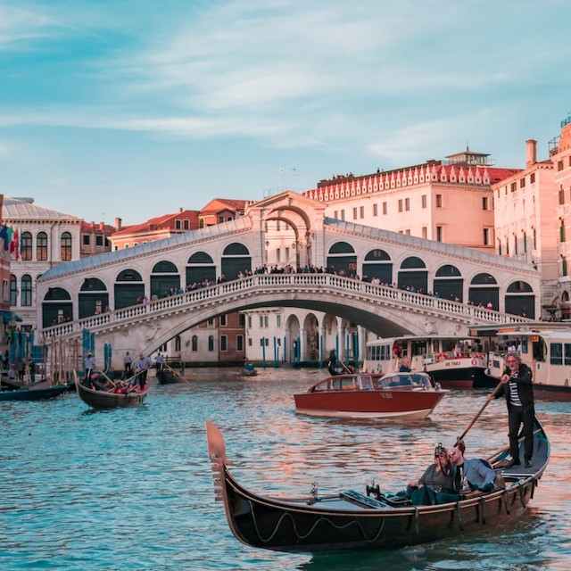
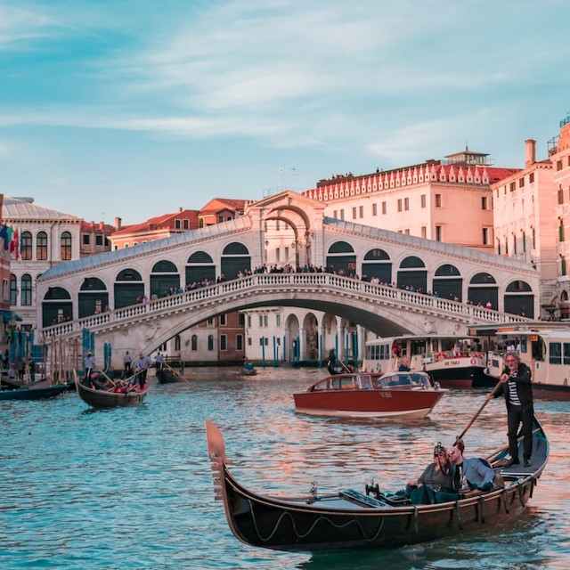

INVESTIGACIÓN Y ARMADO DE TU CARPETA
El primer paso es saber si calificamos para solicitar el reconocimiento, es fundamental conocer nuestro árbol genealógico, de esta forma podremos saber que actas son las necesarias para el armado de tu carpeta.

TRADUCCIONES Y SU CONFORMIDAD
Una vez que la documentación esté apostillada, se traduce al italiano con un traductor público matriculado, luego de ello, comienza el último paso del proceso a realizar en Argentina, que es la legalización de las traducciones, a través de la cual se da fe que es una traducción correcta. Existen tres modos de realizar este último paso: Doble Apostilla, Visto Consular o la Asseverazione.